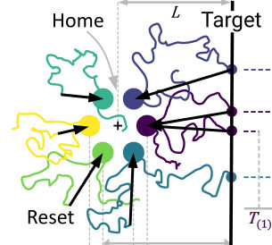
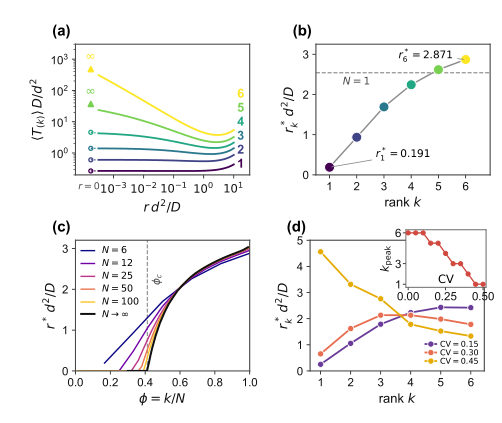

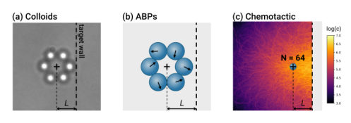
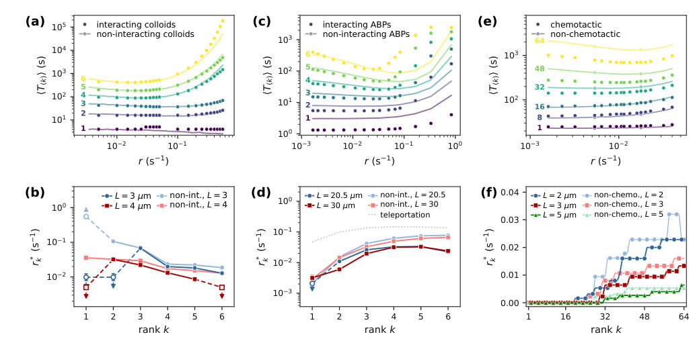
← Index · ← Previous · Next →
Authors: Antti J. Niemi
Type: theory · Category: quantum gases · PDF: https://arxiv.org/pdf/2609.24490v1
Analysis basis: full PDF text, analyzed in chunks
Topic relevance: analog quantum simulation 2/5 · Keldysh / 2PI / non-Gaussian methods 1/5 · correlated / nonlocal dissipation 1/5 · driven-dissipative phase transition 1/5 · methods for driven-dissipative 1/5 · non-equilibrium universality 1/5
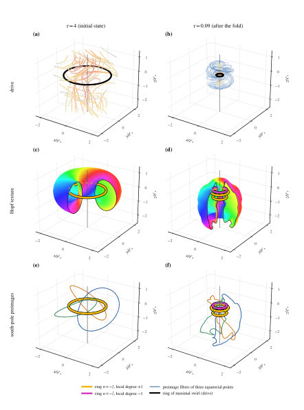
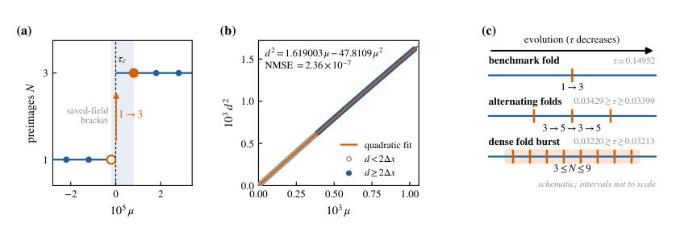
Summary. This theoretical study examines the dynamics of a Hopf texture in a Bose-Einstein condensate when subjected to a flow mimicking a Navier-Stokes blow-up. The authors show that the texture reorganizes through a cascade of fold catastrophes, mathematically characterized by the universal signature of a Thom $A_2$ singularity. This connects topological defect dynamics in quantum gases to advanced catastrophe theory.
Why it may be interesting. This work bridges topological defects (Hopf textures) in quantum matter (BECs) with complex, singular fluid dynamics (Navier-Stokes blow-up), providing a detailed mathematical description of how topology responds to extreme non-linear forcing.
Main problem. The paper investigates how a pseudospin Hopf texture, existing in a two-component Bose-Einstein condensate, responds to a flow analogous to a finite-time singular blow-up solution of the Navier-Stokes equation.
Main result. The texture undergoes fold-mediated creation and annihilation of preimage pairs, with the first transition exhibiting the characteristic signature of a Thom $A_2$ catastrophe.
Method. The dynamics are analyzed using an effective Madelung–Schrödinger theory incorporating a Faxén-like advective correction, and fold events are detected by analyzing the critical set of the mapping defining the texture's preimages.
Model / system. The system is a two-component Bose-Einstein condensate hosting a pseudospin Hopf texture, coupled to the viscous Navier-Stokes dynamics of its thermal cloud. The evolution is governed by a derived effective equation (Eq. 5).
Key observables. Hopf Charge ($Q_H$), fold-mediated pair creation/annihilation, and the local signature of a Thom $A_2$ catastrophe.
Important parameters / regimes. The ratio $\Pi$ of drive to intrinsic texture response, and the characteristic length scales $\ell_*$ and $\ell_r$.
Assumptions / limitations. The analysis relies on using a smooth, prescribed surrogate flow ($\mathbf{U}$) for the actual blow-up solution, and the coupling term is phenomenological.
Figures summary. Figures illustrate the evolution of the drive streamlines relative to the Hopf texture at different times, and summarize the count of fold events, showing the characteristic square-root opening for the first fold.
Paper structure. The paper develops the effective evolution equation by coupling the Hopf texture dynamics to the advective flow. It then analyzes the local reorganization of the texture by tracking preimages, identifying fold catastrophes via singularity analysis, and confirming the universal square-root opening signature.
A two-component Bose--Einstein condensate can host a pseudospin Hopf texture while its thermal cloud obeys viscous Navier--Stokes dynamics. Motivated by OpenAI's reported finite-time singular solution, we drive such a texture with a surrogate of the collapsing core, using an effective Madelung--Schrödinger theory with a Faxén-like advective correction. The texture undergoes fold-mediated creation and annihilation of preimage pairs at conserved Hopf charge with the first one-to-three transition confirmed to obey the square-root opening of a Thom $A_2$
Authors: Ron Vatash, Eden Goldfarb, Vladimir Yu. Rudyak, Yael Roichman
Type: both · Category: statistical mechanics · PDF: https://arxiv.org/pdf/2609.23542v1
Analysis basis: full PDF text, analyzed in chunks
Topic relevance: non-equilibrium universality 2/5 · quantum measurements 2/5 · analog quantum simulation 1/5 · driven-dissipative phase transition 1/5




Summary. This work analyzes how stochastic resetting optimizes the arrival time sequence of multiple searchers in complex physical systems. By establishing a non-interacting theoretical baseline, the authors quantify how interactions and environmental memory modify the optimal search strategy. The findings show that the benefit of active processes increases with the rank of arrival, providing insights into collective search dynamics.
Why it may be interesting. The focus on ordered statistics and the quantitative comparison between theoretical models and complex physical systems (like active matter) provides a rich framework for understanding non-equilibrium dynamics, which is relevant to open quantum systems modeling.
Main problem. The paper investigates how stochastic resetting optimizes the ordered arrival sequence of multiple searchers in soft-matter and biological systems, moving beyond simple first-arrival kinetics.
Main result. Optimal resetting rates ($r^*_k$) increase monotonically with arrival rank ($k$) for non-interacting systems, and the benefit of active mechanisms like chemotaxis increases significantly with the arrival rank.
Method. The authors construct an exact finite-$N$ reference for non-interacting Brownian searchers and compare this baseline against simulations of physical systems (colloids, active particles) to isolate the effects of interactions and environmental memory.
Model / system. The study models search processes in soft-matter/biological contexts using Brownian motion, active Brownian particles, and chemotactic search fields. The core mathematical tool is stochastic resetting applied to the ordered first-passage time statistics.
Key observables. Mean ordered first-passage time $\langle T_{(k)} angle$, optimal resetting rate $r^*_k$, and the ratio $S_k$ comparing chemotactic vs. control arrival times.
Important parameters / regimes. Arrival rank fraction $\phi = k/N$, critical rank fraction $\phi_c \simeq 0.412$, and system parameters like diffusion coefficients and particle concentrations.
Assumptions / limitations. The initial non-interacting reference assumes independent searchers; comparisons to physical systems are used to isolate the effects of direct interactions and environmental memory.
Figures summary. Figures illustrate the dependence of $\langle T(k) angle$ and $r^*_k$ on rank, population size ($N$), and initial spatial heterogeneity ($CV$). Later figures compare chemotactic results against non-interacting controls.
Paper structure. The paper first establishes the theoretical framework using non-interacting Brownian searchers to derive the rank-dependent optimal resetting rate. It then extends this analysis by comparing these theoretical results to complex physical realizations, including colloidal experiments and chemotactic simulations, to quantify the role of interactions.
In many soft-matter and biological systems, task completion relies on the cumulative arrival of multiple searchers rather than the speed of a single pioneer. The completion kinetics are therefore set not only by the first arrival, but by the full ordered sequence of first-passage times. Here, we determine how stochastic resetting optimizes these ordered arrivals for all arrival ranks. We construct an exact finite-$N$ reference for non-interacting Brownian searchers and obtain the mean ordered first-passage time $\langle T_{(k)} \rangle$ and its optimal resetting rate $r_k^*$. For searchers with identical initial conditions, $r_k^*$ increases monotonically with arrival rank and, with increasing population size, approaches the known large-$N$ quantile limit where a finite optimum appears only above a critical rank fraction $φ_c \simeq 0.412$. Spatial heterogeneity qualitatively reorganizes this sequence, shifting its maximum from late to early ranks even without particle interactions. We then compare this baseline with Brownian colloid experiments, interacting active Brownian particles, and a collective autochemotactic search with persistent environmental memory. Across these systems, sensitivity to resetting increases strongly with arrival rank, while deviations from appropriate non-interacting references reveal the influence of direct interactions, finite return overhead, and environmental memory. Our results show that optimal resetting in multiparticle search is governed by the required completion rank and must be evaluated relative to protocol- and geometry-matched baselines.
Authors: Ankur Majumder, Sudeshna Sen
Type: theory · Category: strongly correlated electrons · PDF: https://arxiv.org/pdf/2609.24315v1
Analysis basis: full PDF text, analyzed in chunks
Topic relevance: Keldysh / 2PI / non-Gaussian methods 2/5 · Frenkel-Kontorova 1/5 · analog quantum simulation 1/5 · methods for driven-dissipative 1/5
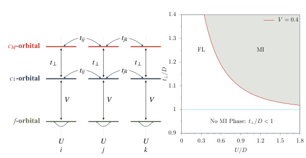
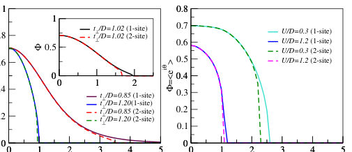
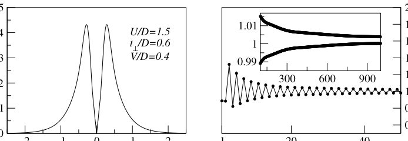
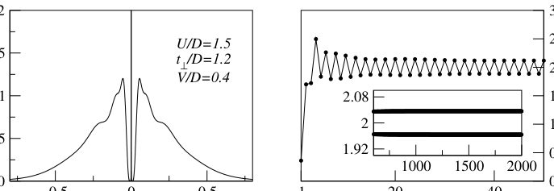
Summary. This work analyzes the Mott transition in a modified Periodic Anderson Model using advanced theoretical techniques like slave-rotor mean-field theory and DMFT. By incorporating short-range spatial correlations via a two-site cluster extension, the authors refine the transition point prediction. Crucially, they map the resulting physics onto a generalized SSH chain, allowing for a topological characterization of the correlated insulating state.
Why it may be interesting. The connection between the Mott transition physics and the topological characterization via the SSH chain provides a powerful, structured framework for understanding correlated electron behavior beyond simple mean-field treatments.
Main problem. The paper investigates the Mott-Hubbard metal-insulator transition (MIT) driven by strong electronic correlations in a modified periodic Anderson model.
Main result. Short-range spatial correlations shift the transition point, and the metallic phase's hopping pattern maps onto a topologically trivial generalized Su-Schrieffer-Heeger (SSH) chain.
Method. The study employs slave-rotor mean-field theory, extended to a two-site cluster, and utilizes Dynamical Mean-Field Theory (DMFT) to evaluate the self-energy.
Model / system. The system is a three-orbital modified periodic Anderson model, described by a Hamiltonian involving localized interacting f-orbitals and itinerant c/cM orbitals coupled via hybridization terms.
Key observables. The vanishing of the rotor expectation value ($\Phi$) diagnoses the Mott transition, and the quasi-particle weight $Z = |\Phi|^2$ is monitored.
Important parameters / regimes. Key parameters include the ratios $U/D$, $t_\perp/D$, and $V/D$, with the transition depending on these ratios.
Assumptions / limitations. Approximations include using slave-rotor mean-field theory and extending it to a minimal two-site cluster to account for short-range correlations.
Figures summary. Figures compare the rotor quantification ($\Phi$) between single-site and two-site results, and show the DMFT $f$-electron self-energy ($ ext{Im}\Sigma_f(\omega)$) and the corresponding auxiliary-chain hoppings for both metallic and insulating regimes.
Paper structure. The paper first introduces the model and uses SRMFT to analyze the transition. It then extends the analysis using a two-site cluster and DMFT, mapping the resulting self-energy onto an auxiliary chain to explore the topological character of the transition.
The Mott-Hubbard transition is a paradigmatic phenomenon driven by strong electronic correlations. We investigate this transition in a three-orbital modified periodic Anderson model using slave-rotor mean-field theory. A minimal two-site cluster extension is introduced to understand the minimal effects of short-range spatial correlations. In comparison to the single-site solution, short-range spatial correlations reveal a shift of the transition point. Going beyond the slave-rotor analysis, we also evaluate the dynamical self-energy and map it onto the boundary Green's function of a non-interacting semi-infinite auxiliary chain. For the metallic phase, the resulting hopping pattern corresponds to a topologically trivial generalized Su--Schrieffer--Heeger chain. This construction provides a framework for exploring the possible topological character of the Mott transition in this model.
Authors: Reza Molavi, Ebrahim Forati, Yaxing Zhang, Andrey R. Klots, Juan Atalaya, Brandon W. Langley, Dogan A. Timucin, Moein Nazari, Ghazi Khan, Zlatko K. Minev, Alexander N. Korotkov, Michel H. Devoret
Type: theory · Category: quantum information and computing · PDF: https://arxiv.org/pdf/2609.22442v1
Analysis basis: full PDF text, analyzed in chunks
Topic relevance: QC/QI experiment 2/5 · methods for driven-dissipative 1/5 · quantum measurements 1/5
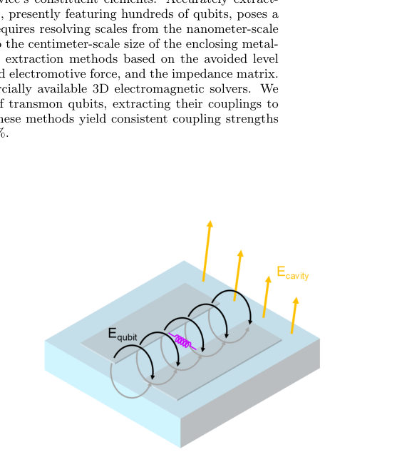
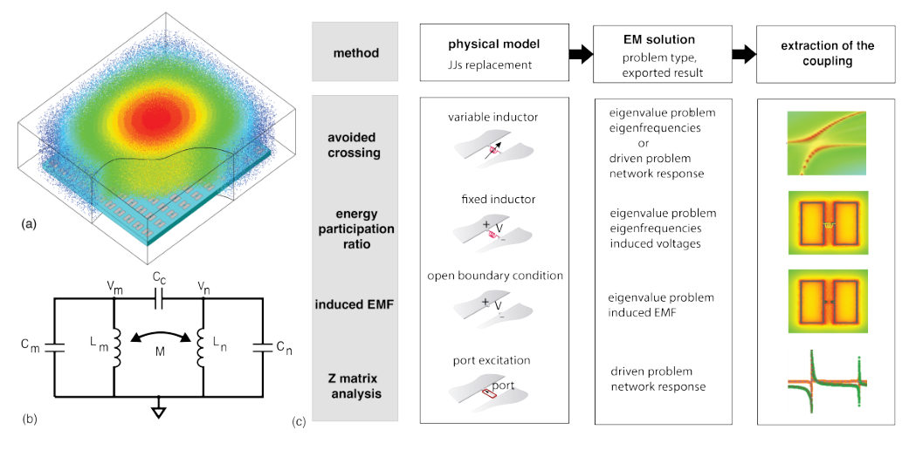
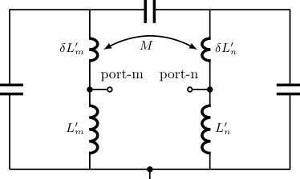
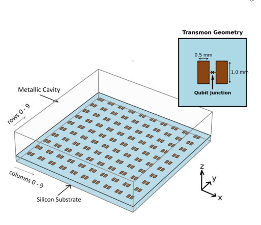
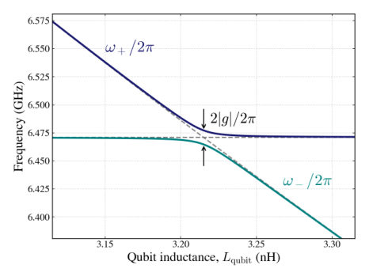
Summary. This paper addresses the critical challenge of measuring electromagnetic coupling strengths in large superconducting quantum processors. It introduces and rigorously compares four distinct numerical techniques—including avoided level crossing and induced EMF—to extract these couplings. The consistent results across these methods validate a robust methodology for characterizing complex, multi-scale quantum hardware architectures.
Why it may be interesting. This work provides essential, rigorous tools for characterizing the coupling landscape in superconducting quantum hardware, which is a prerequisite for scaling up quantum processors and understanding decoherence mechanisms.
Main problem. The core challenge is accurately characterizing the electromagnetic coupling strengths between qubits and the surrounding package modes in large-scale superconducting quantum processors.
Main result. The authors developed and benchmarked four distinct numerical methods—avoided level crossing, EPR, induced EMF, and impedance matrix—showing they yield consistent coupling strength estimates with high accuracy.
Method. The paper proposes and compares four distinct numerical techniques to extract coupling coefficients by analyzing the system's electromagnetic response to changes in qubit parameters or by fitting the full impedance matrix.
Model / system. The system is a large-scale planar array (e.g., $10 imes 10$) of transmon qubits housed in a metallic package. The physics is modeled using coupled LC oscillators, analyzed via full-wave 3D electromagnetic solvers.
Key observables. Coupling strength ($g$), eigenfrequencies ($\omega_m, \omega_n$), energy participation ratio ($p_{mn}$), and induced electromotive force ($V_{n, ext{open}}$).
Important parameters / regimes. The analysis spans multiple scales, from nanometer-scale Josephson junctions to centimeter-scale packages, and often involves operating near resonance ($\omega_m/\omega_n \approx 1$).
Assumptions / limitations. The methods rely on solving linear electromagnetic models and are sensitive to numerical errors inherent in multi-scale 3D domain simulations.
Figures summary. Figures illustrate the physical setup, the comparison between the four extraction methods (EPR, EMF, etc.), and the mathematical framework relating the coupling to measurable quantities.
Paper structure. The paper introduces the multi-scale coupling problem, details the four proposed numerical methods (EPR, EMF, Impedance Matrix, Avoided Crossing), benchmarks these methods on a $10 imes 10$ array, and concludes by comparing the consistency of the results.
High-fidelity control of superconducting quantum processors requires accurate characterization of electromagnetic coupling strengths among the device's constituent elements. Accurately extracting these couplings across large-scale architectures, presently featuring hundreds of qubits, poses a challenging multi-scale modeling problem. This requires resolving scales from the nanometer-scale geometry of Josephson junctions and their leads to the centimeter-scale size of the enclosing metallic packages. We present four numerical coupling extraction methods based on the avoided level crossing, the energy participation ratio, the induced electromotive force, and the impedance matrix. These methods are tailored to work with commercially available 3D electromagnetic solvers. We benchmark these techniques on a $10\times10$ array of transmon qubits, extracting their couplings to standing package modes. Our results show that these methods yield consistent coupling strengths with a maximum relative difference of less than 5%.
Authors: Han Yan
Type: theory · Category: strongly correlated electrons · PDF: https://arxiv.org/pdf/2609.23591v1
Analysis basis: full PDF text, analyzed in chunks
Topic relevance: analog quantum simulation 2/5 · quantum measurements 2/5
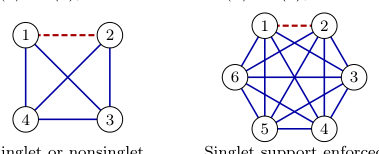
Summary. This theoretical work establishes that the strong symmetry of a mixed quantum state can be fully determined by measuring only its two-point correlation functions. By analyzing the covariance matrix derived from these correlations, the authors provide an algorithm to identify the maximal symmetry subgroup and its associated character. This is highly valuable because low-order correlations are more accessible experimentally than full state tomography.
Why it may be interesting. This work provides a powerful, experimentally accessible diagnostic tool for characterizing symmetry in complex quantum many-body systems, directly relevant to understanding symmetry breaking in correlated materials.
Main problem. The paper addresses how to determine the exact 'strong symmetry' of a mixed quantum state using only low-order correlation functions, circumventing the need for full-state tomography.
Main result. It proves that for continuous onsite unitary actions of connected groups, identical two-point correlations are sufficient to determine the state's strong symmetry and its associated character.
Method. The method involves analyzing the charge covariance matrix derived from one- and two-point correlation functions to identify the generators of the maximal connected strong-symmetry subgroup.
Model / system. The theory applies to general quantum many-body systems ($N$ sites) whose symmetries are governed by a connected topological group $G$ acting via onsite unitary representations.
Key observables. One- and two-point correlation functions, two-site reduced density matrices ($ ho_{ij}$), and the charge covariance matrix $\Gamma( ho)$.
Important parameters / regimes. The continuous nature of the symmetry group $G$ and the requirement of onsite unitary actions.
Assumptions / limitations. The results are rigorously proven only for continuous onsite unitary actions of connected groups; the method fails for discrete symmetries.
Figures summary. Figure 1 illustrates that selected two-site data can establish strong symmetry, even when some pairs are unmeasured.
Paper structure. The paper establishes the theoretical equivalence between equal two-point correlations and equal pair RDMs (Theorem 1), then provides a constructive algorithm (Theorem 2) using the covariance kernel to find the maximal symmetry subgroup $H_ ho$ and its character $\chi_ ho$.
Strong and weak symmetries and their spontaneous breaking distinguish different forms of symmetry and order in mixed states. We show that complete one- and two-point correlation functions, equivalently all two-site reduced density matrices, determine exact strong symmetry for continuous onsite unitary actions of connected groups: states with identical correlations have the same strong symmetry and character. We also present an algorithm to determine the maximal connected strong-symmetry sub-Lie group and its character from two-point correlations. Because such correlations are more accessible than full-state tomography, the algorithm is readily applicable to experiments ranging from condensed-matter systems to quantum simulators and circuits. We also identify group and representation-specific cases in which fewer correlations suffice.
Authors: Chikara Shinei
Type: theory · Category: quantum information and computing · PDF: https://arxiv.org/pdf/2609.24295v1
Analysis basis: full PDF text, analyzed in chunks
Topic relevance: correlated / nonlocal dissipation 2/5 · QC/QI experiment 1/5 · analog quantum simulation 1/5
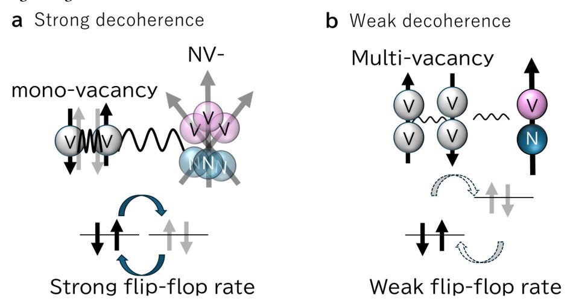
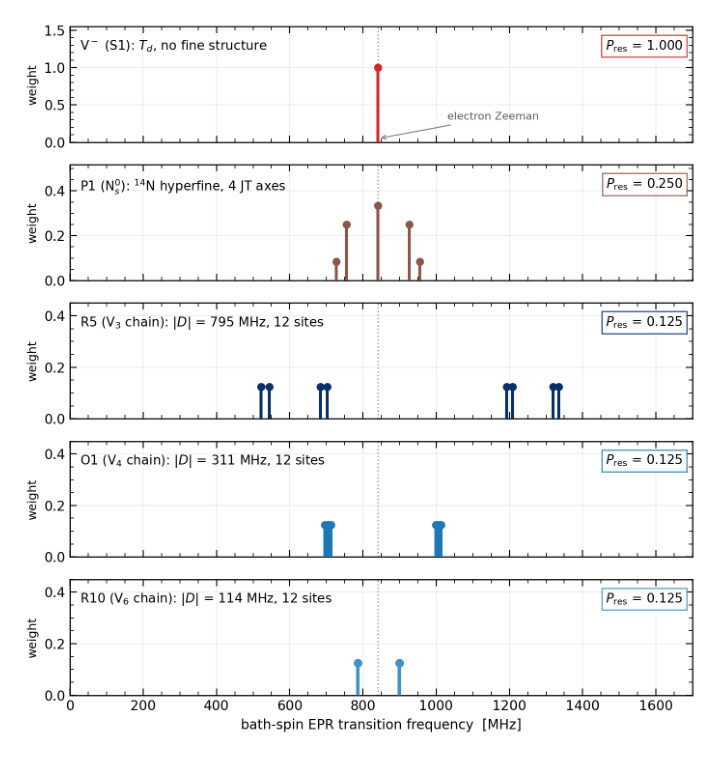
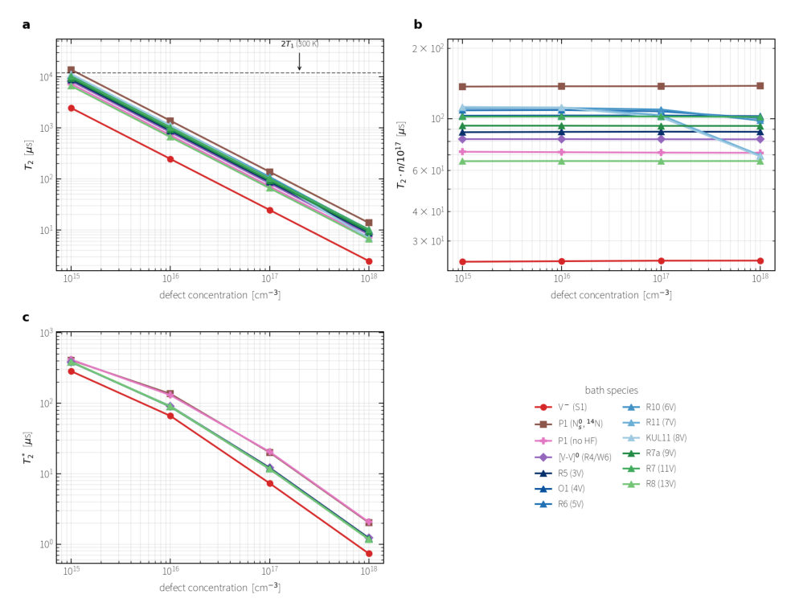
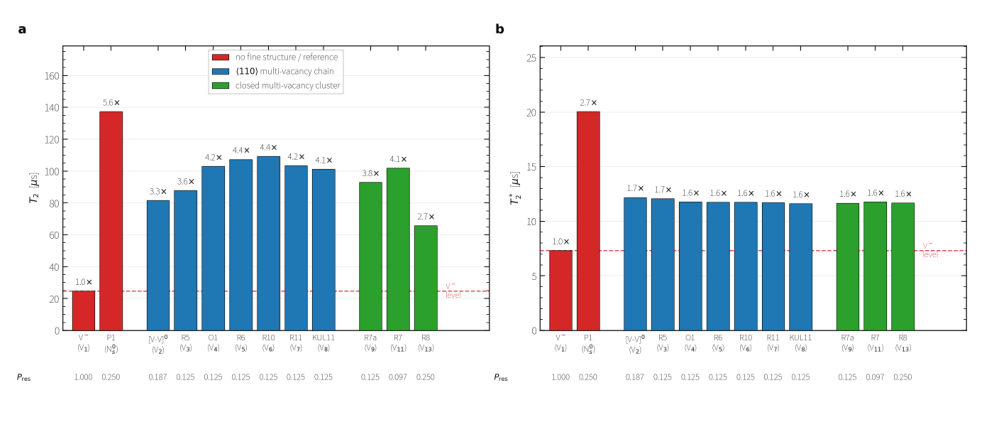
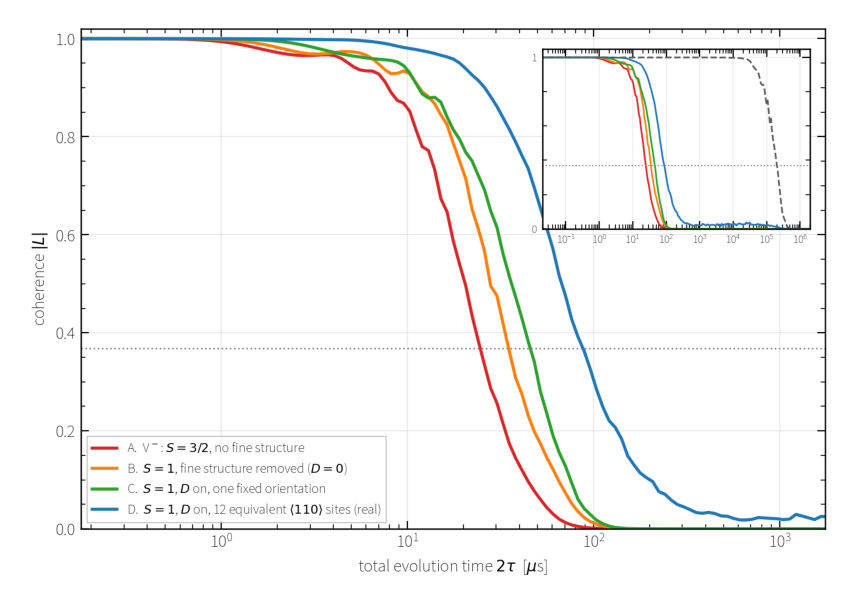
Summary. The study uses cluster-correlation-expansion simulations to investigate how multi-vacancy spin baths affect NV- spin coherence in diamond. It overturns previous assumptions by showing that vacancy aggregation enhances $T_2$ by increasing the spectral disorder of the bath spins. The coherence time is found to depend critically on the variety of local site orientations rather than just the total density of defects.
Why it may be interesting. This work provides a detailed theoretical understanding of decoherence mechanisms in solid-state qubits, specifically showing how structural disorder (aggregation) can be beneficial rather than detrimental to coherence.
Main problem. To determine if the aggregation of vacancies in a semiconductor enhances or diminishes the spin coherence time ($T_2$) of an NV- center, contrary to previous assumptions.
Main result. Vacancy aggregation enhances NV- spin coherence by 2.7–4.4 times compared to isolated vacancies, because the resulting multi-vacancy bath has a lower fraction of bath pairs sharing a transition frequency.
Method. Cluster-correlation-expansion (CCE) simulations are employed to model the spin bath interactions and calculate the coherence time.
Model / system. The system is the NV- spin qubit in diamond, coupled to a surrounding 'spin bath' composed of multi-vacancy complexes (e.g., $ ext{V}n^0$). The coherence is governed by the resonant flip-flop fraction ($P$) between bath spins.}
Key observables. Hahn-echo coherence time ($T_2$), ensemble dephasing time ($T_2^*$), and the resonant flip-flop fraction ($P_{ ext{res}}$).
Important parameters / regimes. Paramagnetic spin density, zero-field splitting ($D$), and the fine-structure splitting of the bath spins.
Assumptions / limitations. The CCE calculation uses only published electron-paramagnetic-resonance (EPR) parameters, and the coherence is limited by the fraction of bath pairs sharing a transition frequency.
Figures summary. Figures compare $T_2$ and $T_2^*$ for various vacancy species (e.g., $ ext{V}^-$ vs. multi-vacancy) across varying concentrations, illustrating the enhancement factor.
Paper structure. The paper systematically compares the coherence time derived from isolated vacancies versus those from aggregated multi-vacancy clusters, quantifying the enhancement factor based on symmetry and site multiplicity.
Annealing a semiconductor makes its vacancies mobile; they aggregate into multi-vacancy complexes that often carry spin. Such centres are a magnetic-noise source for any spin qubit among them, in silicon and silicon carbide as well as in diamond, and they are accordingly blamed for NV- decoherence in irradiated and implanted diamond, with two coherence records credited to removing them. Cluster-correlation-expansion simulations driven by published electron-paramagnetic-resonance parameters invert that attribution. At a fixed paramagnetic spin density a multi-vacancy bath gives a Hahn-echo coherence time 2.7-4.4 times longer than a bath of isolated negative vacancies, constant over three decades of concentration. A bath dephases the qubit because its spins exchange spin projections with one another, and two can exchange only if their transition frequencies match. A fine-structure splitting shifts those frequencies. Were every defect on the same crystallographic site, all would shift alike and still match: worth only a factor 1.3. Real defects occupy symmetry-equivalent sites pointing in different directions, so neighbours land at different frequencies and stop exchanging: a further 1.9. What governs the coherence time is therefore the fraction of bath pairs sharing a transition frequency, not the zero-field splitting. Vacancy aggregation extends NV- spin coherence rather than shortening it.
Authors: Ginanjar Utama, Hermawan Kresno Dipojono
Type: theory · Category: quantum information and computing · PDF: https://arxiv.org/pdf/2609.23059v1
Analysis basis: full PDF text, analyzed in chunks
Topic relevance: analog quantum simulation 2/5 · quantum measurements 1/5
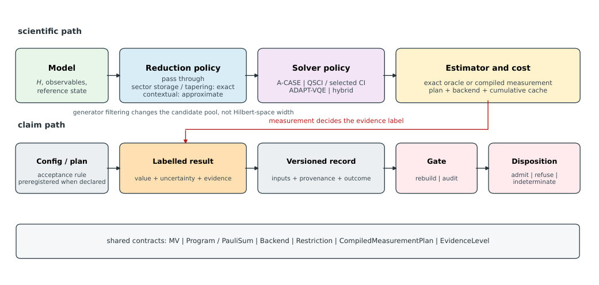
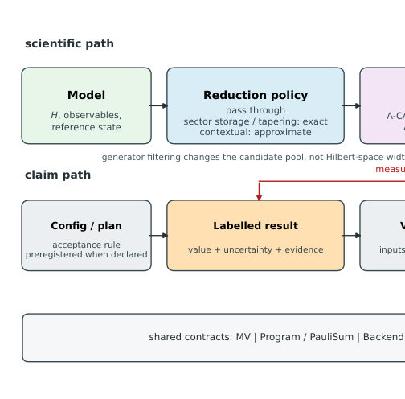
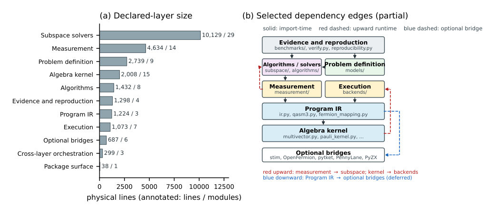
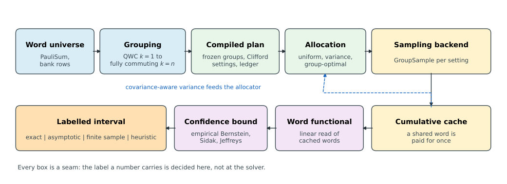
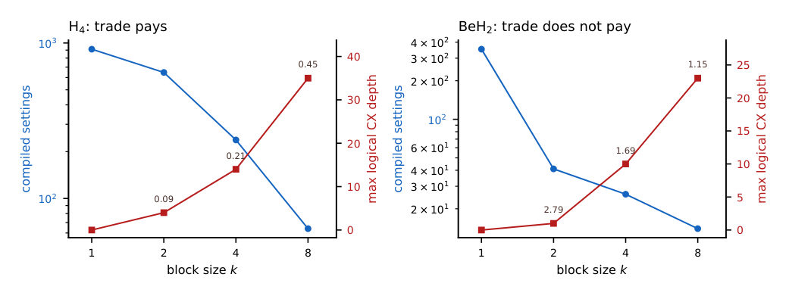
Summary. This paper introduces 'clifford_qc,' a Python toolkit designed to standardize and streamline quantum simulation research. It provides a unified framework for constructing quantum models using a sparse Pauli algebra and comparing different eigensolving techniques. The toolkit's value lies in its modularity and ability to ensure reproducible comparisons across various quantum physics problems.
Why it may be interesting. It provides a robust software framework for comparing different theoretical approaches to quantum simulation, which is crucial for researchers modeling complex quantum systems.
Main problem. The primary goal is to develop a comprehensive, consistent, and reusable Python toolkit for performing various steps of quantum simulation, from model construction to measurement analysis.
Main result. The toolkit successfully integrates operator algebra, variational/subspace eigensolvers, and shared measurement caching, enabling reproducible comparison of quantum simulation methods.
Method. The approach is operator-centric, utilizing a sparse Pauli algebra representation for Hamiltonians and observables, and implementing a modular pipeline involving model preparation, independent solving (e.g., A-CASE), and optional reference validation.
Model / system. The toolkit is general, applicable to small-system research on quantum algorithms for spin, lattice, and molecular models, using Pauli words to represent operators.
Key observables. Energy eigenvalues, overlap matrices ($S_{ij}$), Hamiltonian matrices ($H_{ij}$), and various basis diagnostics (e.g., conditioning, measurement support).
Important parameters / regimes. The results are based on small active spaces (e.g., eight-qubit banks); the package does not claim general speedup or hardware performance.
Assumptions / limitations. The package is an alpha research tool; results are limited to small systems, and the comparison of methods relies on structured bookkeeping rather than guaranteed physical scaling.
Figures summary. Notes mention Tables I, II, and III detailing implemented features, the molecular command-line pipeline stages, and the architectural layers of the package, respectively.
Paper structure. The paper details the modular architecture, covering the sparse Pauli algebra kernel, the subspace solvers (A-CASE), the workflow pipeline (prepare $ ightarrow$ solve $ ightarrow$ validate), and the methodology for ensuring reproducibility through committed records.
clifford_qc is a Python research toolkit for constructing quantum models, comparing variational and subspace eigensolvers, and estimating measurement resources. A common sparse Pauli algebra connects Hamiltonians, density operators, gates, and candidate-selection observables, while dedicated interfaces handle circuit programs, execution, and statistical estimates. We introduce the representation with a worked gradient example and trace a molecular calculation through reusable model preparation, an independent solve, and optional reference validation. Shared measurement caches reuse outcomes across observables on the same reference state; packed coefficient storage and streaming expose a memory-recomputation tradeoff. Committed small-system benchmarks show how these interfaces support comparisons with explicit accuracy and cost assumptions. Fully commuting measurement reduces the shots needed to certify a fixed first-order energy functional, but entangling-gate time and connectivity can offset the saving or make the protocol inadmissible under illustrative device models. Other studies identify a subspace bias floor that more shots cannot remove, an indeterminate comparison of fermionic encodings across instances, and an approximate-restriction screen whose required comparison fails before sampling. Generated tables, provenance records, and manuscript checks connect the reported claims to their inputs, although evidence labels are not yet validated uniformly. The package supports reproducible method development; these results establish neither hardware performance nor a general simulation speedup.
Authors: Marnin J. Di Nunzio, Frank Lechermann, Ilya M. Eremin
Type: theory · Category: strongly correlated electrons · PDF: https://arxiv.org/pdf/2609.23150v1
Analysis basis: full PDF text, analyzed in chunks
Topic relevance: Keldysh / 2PI / non-Gaussian methods 2/5 · analog quantum simulation 1/5
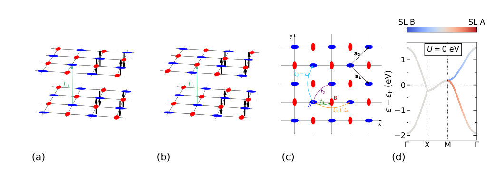
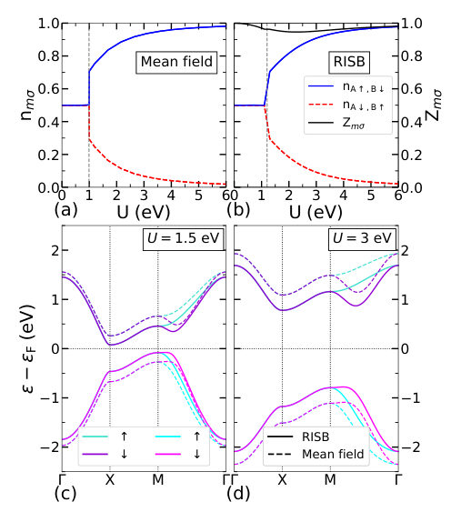
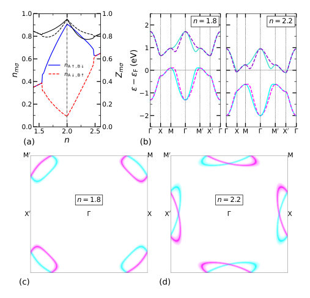
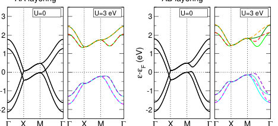
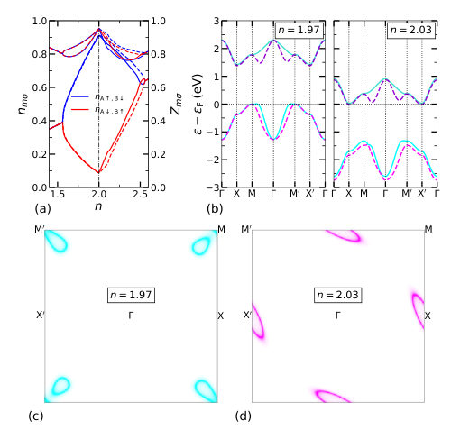
Summary. This theoretical work explores how various external parameters—such as strain, doping, and interlayer coupling—can control the exotic state of altermagnetism in Hubbard-model systems. By comparing Hartree-Fock and RISB calculations, the authors demonstrate that these controls can generate fully spin-polarized electronic states without requiring conventional ferromagnetism. The findings highlight a rich interplay between structural geometry and electronic correlations in determining magnetic metal behavior.
Why it may be interesting. The detailed treatment of correlation effects ($U$) and the comparison between mean-field and slave-boson methods provide valuable insights into the breakdown of simple mean-field descriptions in strongly correlated magnetic metals.
Main problem. The study investigates how electronic correlations, doping, strain, and interlayer coupling control the emergence and stability of altermagnetism in metallic systems.
Main result. The research establishes that correlations, strain, doping, and stacking are complementary mechanisms to generate fully spin-polarized Fermi surfaces in altermagnetic metals.
Method. The authors compare results from Hartree–Fock theory with the more advanced rotationally invariant slave-boson (RISB) approach to treat correlation effects.
Model / system. The model uses a minimal Hubbard-type Hamiltonian applied to mono- and bilayer systems, featuring hopping terms and an on-site intraorbital Hubbard interaction.
Key observables. Altermagnetic order parameter, quasiparticle (QP) weight ($Z_m$), spin-polarized Fermi surface topology, and charge order.
Important parameters / regimes. Interaction strength ($U$), doping level, uniaxial strain magnitude, and interlayer coupling strength.
Assumptions / limitations. The analysis relies on the Hubbard model and the RISB approximation to incorporate correlation-induced quasiparticle renormalization.
Figures summary. Figures illustrate the model structure (AA/AB stacking), compare HF vs. RISB results for the altermagnetic transition at half-filling, and show QP dispersions for doping away from half-filling.
Paper structure. The paper systematically analyzes the system by first establishing the model, then comparing mean-field (HF) and correlated (RISB) treatments, and finally detailing the effects of doping and strain in both monolayer and bilayer geometries.
Altermagnets combine vanishing net magnetization with a momentum-dependent spin-split electronic structure, providing a route to spin-polarized carriers without ferromagnetism. Here, we investigate how electronic correlations, doping, uniaxial strain, and interlayer coupling control altermagnetism within a minimal Hubbard-type model for mono- and bilayer systems. Comparing Hartree--Fock theory with the rotationally invariant slave-boson (RISB) approach, we demonstrate the robustness of altermagnetic order against quasiparticle renormalization and reveal a separation between the onset of magnetic order and the loss of quasiparticle coherence at stronger coupling. In the monolayer, doping produces a pronounced particle--hole asymmetry, while its combination with uniaxial strain generates a fully spin-polarized Fermi surface close to half-filling. In the bilayer, stacking that favors ferroic alignment of the layer altermagnetic order parameters allows their momentum-dependent spin splittings to combine constructively. Weak asymmetric doping additionally induces intra-unit-cell charge order, resulting in fully spin-polarized low-energy carriers. At a bilayer filling of five electrons in four orbitals, we find a continuous paramagnet-to-altermagnet transition followed, at stronger coupling, by an evolution toward a Mott-like regime with strongly suppressed quasiparticle weight. Our results establish correlations, strain, doping, and stacking as complementary means of controlling altermagnetic metals and generating fully spin-polarized Fermi surfaces.
Authors: Georgiy K. Lavrov, Eduard G. Nikonov
Type: theory · Category: statistical mechanics · PDF: https://arxiv.org/pdf/2609.24722v1
Analysis basis: full PDF text, analyzed in chunks
Topic relevance: analog quantum simulation 2/5 · methods for driven-dissipative 1/5
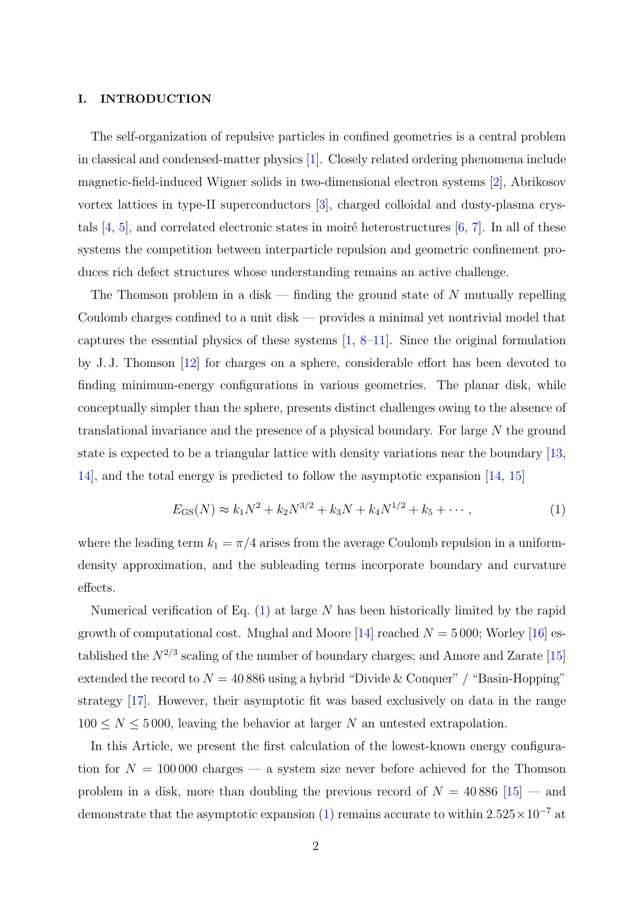
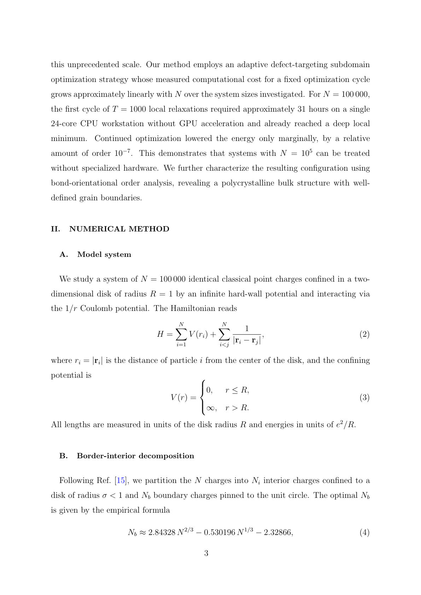
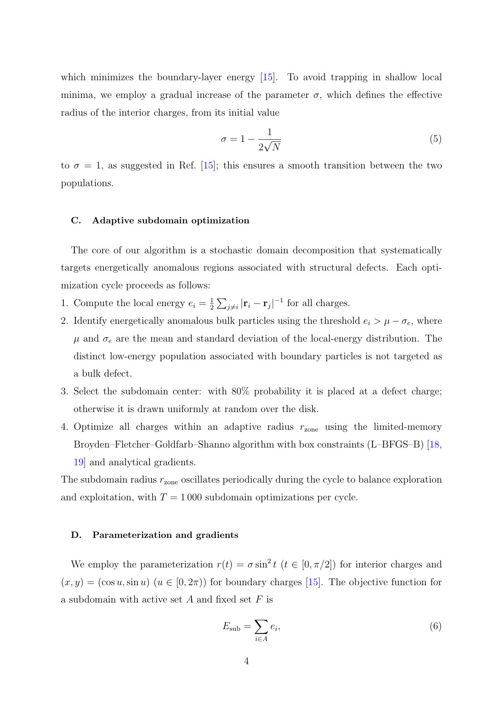

Summary. This work calculates the lowest known energy configuration for 100,000 classical point charges confined to a disk, pushing the boundary of the classical Thomson problem. Using a sophisticated optimization technique, the authors achieved this record while demonstrating the energy's remarkable consistency with established asymptotic theoretical predictions. This establishes a new benchmark for understanding highly correlated, two-dimensional classical Coulomb systems.
Why it may be interesting. While focused on classical electrostatics, the rigorous numerical optimization techniques and the study of ground states in highly constrained, interacting many-body systems provide valuable computational benchmarks applicable to finding ground states in quantum many-body systems.
Main problem. The paper addresses the classical Thomson problem in a disk: finding the lowest energy configuration for a very large number of point charges interacting via a Coulomb potential.
Main result. They successfully calculated the minimum energy for $N=100,000$ charges, significantly surpassing previous records, and confirmed the energy's agreement with asymptotic theoretical expansions.
Method. The calculation employs an adaptive defect-targeting subdomain optimization strategy, which involves partitioning the charges and using stochastic domain decomposition to minimize the total Coulomb energy.
Model / system. The system consists of $N$ classical point charges confined to a 2D disk, interacting via the $1/r$ Coulomb potential. The Hamiltonian is defined by the sum of repulsive Coulomb interactions.
Key observables. The minimum total energy ($E_{\min}$), and the analysis of bond-orientational order revealing a polycrystalline bulk structure.
Important parameters / regimes. The system size $N$ reaches $100,000$, and the calculation is performed in a 2D disk of radius $R=1$.
Assumptions / limitations. The primary assumption is the validity of the asymptotic energy expansion derived from smaller $N$ values up to the unprecedented scale of $N=100,000$.
Paper structure. The paper details the formulation of the problem, describes the specialized optimization methodology (adaptive defect-targeting), presents the computational results for $N=100,000$, and analyzes the structural properties via bond-orientational order.
We report the first calculation of the lowest-known energy configuration for $N=100\,000$ classical point charges confined to a disk and interacting via the $1/r$ Coulomb potential - a system size never before achieved for the Thomson problem in a disk, more than doubling the previous record of $N=40\,886$ reported by Amore and Zarate. An adaptive defect-targeting subdomain optimization strategy yields an approximately linear growth of the wall-clock time per cycle with $N$; for $N=100\,000$ a single $24$-core CPU workstation without GPU acceleration required $\approx31$ hours. The energy $E_{\min}=7.80466624157\times10^{9}$ deviates from the asymptotic expansion fitted to $100\le N\le5000$ data by only $2.525\times10^{-7}$, providing a stringent test of its extrapolation to unprecedented scales. Bond-orientational order analysis reveals a polycrystalline bulk threaded by radial grain boundaries, establishing a new benchmark for two-dimensional Coulomb systems.
Authors: Ao-Xiang Liu, Cong-Feng Qiao
Type: theory · Category: quantum information and computing · PDF: https://arxiv.org/pdf/2609.23277v1
Analysis basis: full PDF text, analyzed in chunks
Topic relevance: quantum measurements 2/5 · quantum optics experiment 1/5
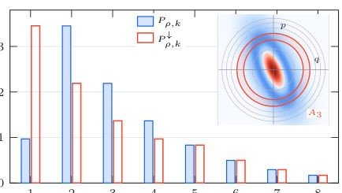
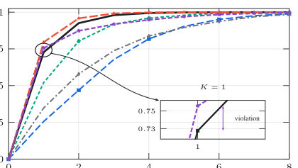
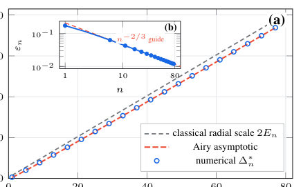
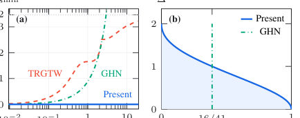
Summary. This theoretical paper corrects a major conjecture regarding the vacuum state's dominance in phase space by introducing a finite-resolution coarse-graining procedure. By integrating the Wigner function over concentric energy shells, the authors restore a majorization relation that is experimentally testable. This leads to a novel, measurable criterion for detecting entanglement directly from joint homodyne measurements.
Why it may be interesting. This work provides a concrete, experimentally measurable criterion for quantum state properties (like entanglement) by translating abstract majorization concepts into observable quantities derived from joint homodyne measurements.
Main problem. The paper addresses the failure of the conjecture that the vacuum Wigner function continuously majorizes that of any Wigner-positive state, and seeks to restore a robust majorization relation.
Main result. By coarse-graining the Wigner function over concentric radial energy shells, the authors restore vacuum majorization for Wigner-positive states, yielding a strict criterion for non-vacuum Gaussian states.
Method. The core method involves radial coarse-graining of the Wigner function into probability vectors defined by energy shells, and then applying the mathematical concept of majorization to these discrete probability distributions.
Model / system. The analysis focuses on single-mode bosonic systems described by the Wigner distribution in phase space, utilizing the harmonic oscillator Hamiltonian to define radial energy shells.
Key observables. Shell probability vectors ($P_ ho(\Pi)$), Wigner function ($W_ ho(r)$), and a two-mode entanglement criterion derived from joint homodyne outcomes.
Important parameters / regimes. The resolution parameter ($\Delta$) defining the energy shells, and the radial negativity scale ($\Delta^*_ ho$) for negative states.
Assumptions / limitations. The majorization restoration requires that the integrated shell weights remain non-negative ($P_{ ho,k}(\Pi) \geq 0$).
Figures summary. Figures illustrate the process of radial coarse-graining for squeezed states, comparing resulting shell weights against the vacuum benchmark, and show entanglement benchmarks using EPR distributions.
Paper structure. The paper first disproves the continuous majorization conjecture using specific states. It then introduces radial coarse-graining to restore the majorization relation for finite resolutions. Finally, it applies this restored relation to derive a measurable two-mode entanglement criterion.
Quantum uncertainty limits how strongly Wigner functions can concentrate in phase space. It is commonly conjectured that the vacuum Wigner function continuously majorizes that of any Wigner-positive state. However, by constructing Wigner-positive states whose localized quantum coherence lowers their Wigner entropy below the vacuum value, we show that this conjecture is incorrect. We restore vacuum majorization at finite resolution by integrating single-mode Wigner functions over concentric radial energy shells, obtaining probability vectors majorized by that of the vacuum for all Wigner-positive states and for Wigner-negative states with non-negative shell weights. Anchoring these shells to a fixed oscillator frame breaks affine symplectic invariance, rendering this relation strict for every non-vacuum Gaussian pure state. For Wigner-negative states, the persistence of negative shell weights defines a radial negativity scale with Airy-edge semiclassical asymptotics for highly excited Fock states. Operationally, we combine the majorization relation with partial transposition to obtain a two-mode entanglement criterion directly evaluable from radially binned joint homodyne outcomes without state reconstruction.
Authors: Genji Fujii
Type: theory · Category: quantum information and computing · PDF: https://arxiv.org/pdf/2609.23046v1
Analysis basis: full PDF text, analyzed in chunks
Topic relevance: analog quantum simulation 2/5 · quantum measurements 1/5
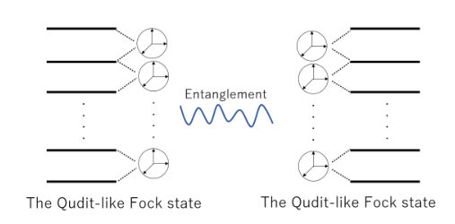
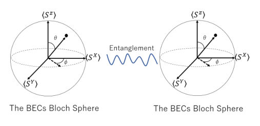
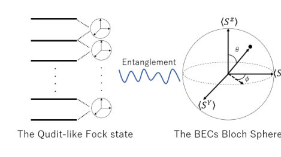
Summary. This paper develops a theoretical framework, Controlled-Bloch-Sphere Universality (CBSU), to characterize quantum computation in Bose-Einstein condensate (BECs) qubit systems. It analyzes how the system's ability to simulate arbitrary unitaries depends on controlling both the Bloch vector movement and the radius of the associated Bloch sphere. The results clarify the computational advantages and limitations of using BECs as quantum processors.
Why it may be interesting. This work bridges quantum information theory (universality, Gottesman-Knill analogy) with experimental quantum simulation platforms (BECs), providing a rigorous theoretical framework for characterizing computational power in emerging quantum hardware.
Main problem. The paper analyzes the concept of quantum computational universality specifically within Bose-Einstein condensate (BECs) qubit systems, a topic less understood than for standard qubits or qudits.
Main result. The authors introduce Controlled-Bloch-Sphere Universality (CBSU), showing that achieving universality requires controlling both the Bloch vector movement and the ability to arbitrarily scale the Bloch sphere's radius.
Method. The analysis involves comparing the system's behavior using two representations—small Bloch spheres from the Fock basis and a large Bloch sphere from the SU(2) coherent state representation—and analyzing the role of Clifford versus non-Clifford gates.
Model / system. The system under study is the BECs qubit, which is modeled as spanning a high-dimensional Hilbert space $(N+1)$ and is analyzed using Stokes operators ($S_x, S_y, S_z$). The theory incorporates both qudit-like Fock states and the continuous Bloch sphere representation.
Key observables. The scaling factor $r$ (related to entanglement, $ ext{Tr}( ho_{1,2}) = 1 + |r|^2/2$), and the expectation values of the Stokes operators ($\langle S_x angle^2 + \langle S_y angle^2 + \langle S_z angle^2 = N^2$).
Important parameters / regimes. The particle number $N$, the scaling factor $r$, and the distinction between Clifford and non-Clifford gate operations.
Assumptions / limitations. The analysis assumes the exclusion of Bloch sphere distortions due to errors and relies on the distinction between fundamental Hermitian operators (BECs) and standard unitary operators (qubits).
Figures summary. Figure 1 illustrates the Fock basis spanning an $(N+1)$-dimensional space for one case; Figure 2 shows entanglement; and Figure 3 depicts the entanglement between a qudit-like Fock state and a BEC Bloch sphere using a two-quantum gate.
Paper structure. The paper progresses by first establishing the need to analyze universality in BECs systems, then defining the concept of CBSU by considering the interplay between qudit-like and Bloch-sphere representations, and finally analyzing specific bipartite cases using Hamiltonians to demonstrate the required control over the radius scaling factor.
Quantum computing promises to outperform classical computing for certain computational tasks. One of the key concepts underlying this potential is universality. Universality has been extensively studied not only for qubits but also for higher-dimensional quantum systems, such as qutrits and qudits, which span Hilbert spaces of dimension greater than two. However, the concept of universality in Bose-Einstein condensates (BECs) qubit systems, which have been proposed relatively recently, remains insufficiently understood. In this work, we analyzed universality in BECs qubit systems. Our results clarify the theoretical aspects of universality in quantum computation within the class of ((N+1))-dimensional representations of SU(2), taking into account two distinct representations of the quantum states.
Authors: E. R. Smith, D. Dini, D. M. Heyes
Type: theory · Category: statistical mechanics · PDF: https://arxiv.org/pdf/2609.23905v1
Analysis basis: full PDF text, analyzed in chunks
Topic relevance: Keldysh / 2PI / non-Gaussian methods 2/5
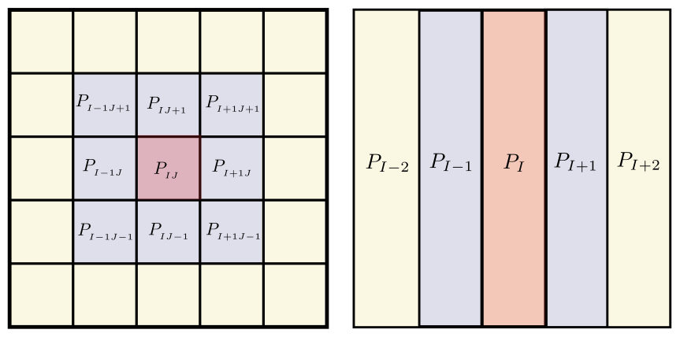
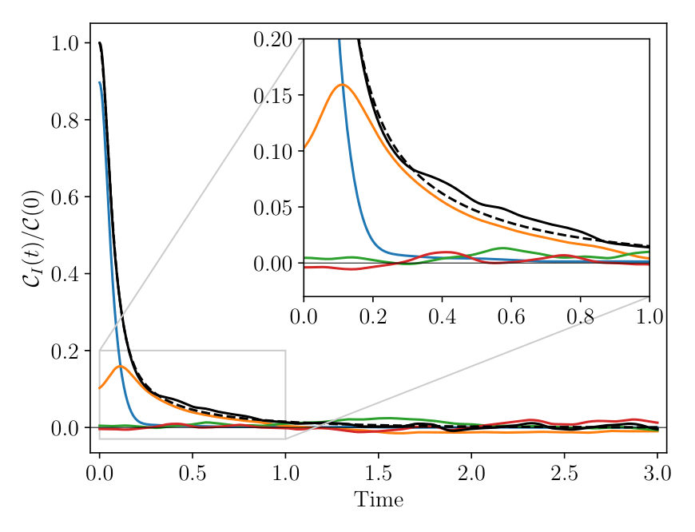
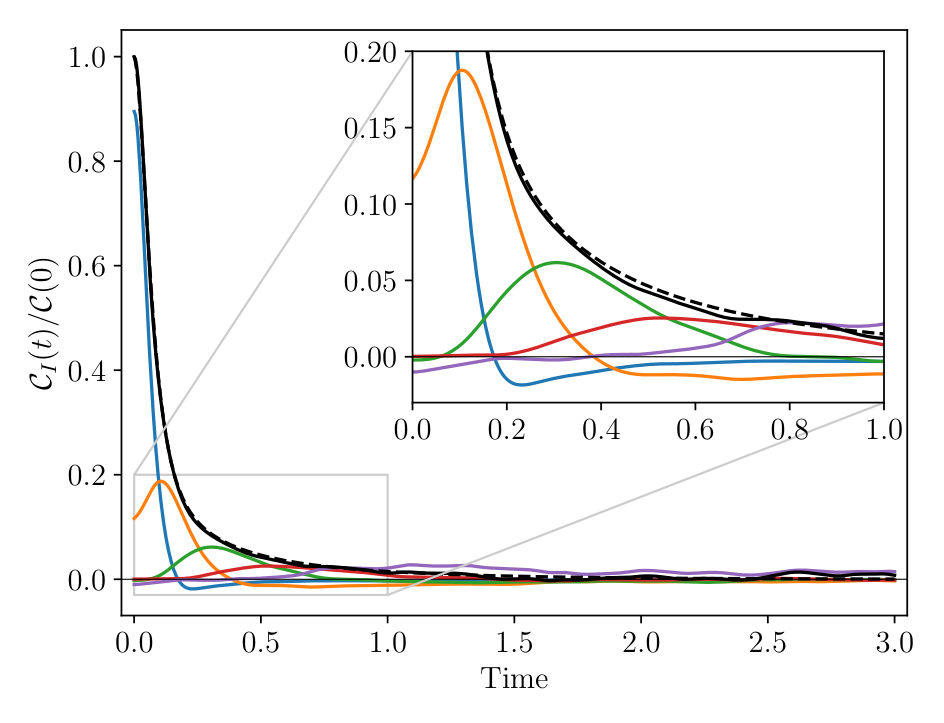
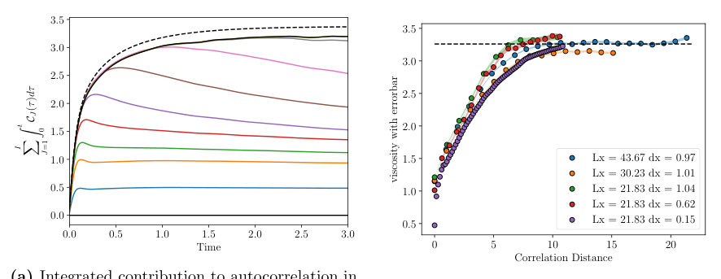
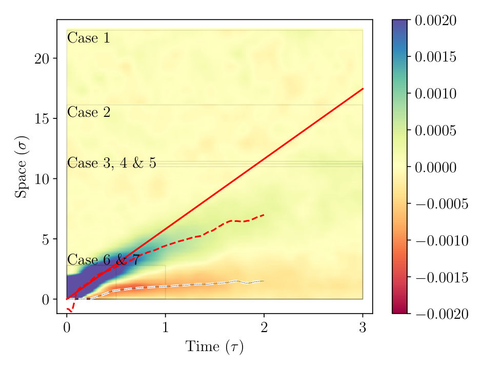
Summary. This work extends the Green-Kubo method by spatially decomposing the shear stress tensor to analyze the liquid's response in real space. By fitting the resulting spatio-temporal correlation function to a Gaussian model, the authors propose a way to estimate transport properties like viscosity using only short, computationally feasible MD runs. This bypasses the need for excessively long simulations.
Why it may be interesting. While focused on classical MD, the technique of extracting long-time dynamics from short-time, localized measurements via functional fitting is a powerful concept applicable to analyzing correlation functions in open quantum systems or quantum field theory simulations.
Main problem. The standard Green-Kubo method for calculating transport coefficients like shear viscosity requires prohibitively long molecular dynamics simulations.
Main result. The authors propose a spatio-temporal generalization of the Green-Kubo relation, showing that the correlation function can be modeled in closed form using Gaussian fits derived from short-time MD data.
Method. The total shear stress is decomposed into components across a spatial grid, transforming the autocorrelation into a cross-correlation of subvolume stresses, leading to a spatial-temporal correlation function.
Model / system. The study uses a model liquid simulated via Molecular Dynamics (MD) with a Lennard-Jones potential, analyzing the stress tensor components.
Key observables. Shear viscosity ($\mu$), shear stress autocorrelation function, and the spatial-temporal correlation function $C(\mathbf{r}, t)$.
Important parameters / regimes. Time ($ au$), spatial separation ($\mathbf{r}$), temperature ($T$), and density ($ ho$).
Assumptions / limitations. The long-time, long-distance behavior of the correlation function can be accurately modeled by fitting the short-time data to a combination of Gaussian functions, allowing the elimination of noise-dominated long-range contributions.
Figures summary. Figures illustrate the spatial-temporal response of the stress correlation for both liquid and solid states, showing the characteristic traveling wave structure fitted by Gaussian pulses.
Paper structure. The paper develops the spatial generalization of the Green-Kubo relation by comparing different stress definitions (Virial vs. Volume Average) and then focuses on fitting the resulting spatio-temporal correlation function to derive a closed-form expression for viscosity.
The Green-Kubo (GK) method which is used to obtain the shear viscosity of a model liquid in equilibrium molecular dynamics (MD) often requires long simulation times to obtain acceptable statistics. This work extends the GK approach to include spatial correlations. The total shear stress in the GK expression is split into a grid of its components in contiguous volumes. In doing this, the autocorrelation of the total system stress can be rewritten as the cross-correlation of the subvolume stresses. This provides a novel real-space insight into the liquid structure, something previously only treated in Fourier space by liquid-state theory. A novel travelling wave like structure is exposed that is shown to be well fitted by a leading Gaussian pulse added to a second negative Gaussian for the bounce back. The fitting parameters include the wave position, magnitude and width which show deep insights into the liquid property. The wave moves at the speed of sound over short times before decreasing in speed with the square root of time, while the wave packet spreads out also as the square root of time. The magnitude is decreasing with form $t^{-3/2}$, a result with strong significance in the history of MD simulation. These fitted forms mean the entire spatial temporal response of the liquid can be modelled in closed form by fitting to data, with short term requiring MD and the long time and distances approximated by the Gaussian form. By limiting the correlation to localized interactions the longer range contribution, which essentially only contribute to the noise, can be eliminated. This looks like a promising approach to model viscosity by taking short MD runs and fitting the long time behaviour.
Authors: Koichi Yamagata
Type: theory · Category: quantum information and computing · PDF: https://arxiv.org/pdf/2609.23020v1
Analysis basis: full PDF text, analyzed in chunks
Topic relevance: quantum measurements 2/5
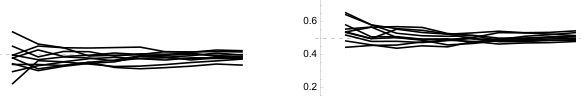
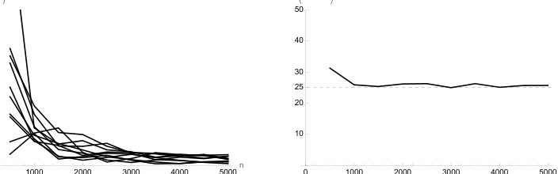
Summary. This work establishes sharp, generalized bounds for quantum parameter estimation when the underlying quantum statistics are constrained to a spin factor algebra. By characterizing the attainable Fisher information region, the authors provide a powerful tool that generalizes the qubit information tradeoff to models with many parameters. The results are significant because the derived bounds are sharp and independent of the ambient Hilbert space dimension.
Why it may be interesting. It provides a rigorous, generalized framework for quantum estimation theory that extends known results (like the qubit tradeoff) to higher-dimensional, structured quantum systems defined by Jordan algebras.
Main problem. The paper determines the exact local precision limits (information tradeoff) for single-copy estimation of quantum statistical models restricted to spin factors.
Main result. The attainable normalized Fisher-information region is characterized by a simple, dimension-independent set, and a sharp weighted covariance bound is established for these models.
Method. The analysis uses quantum estimation theory, combining positive projections onto the spin factor algebra with the structure of the Symmetric Logarithmic Derivative (SLD) Fisher information.
Model / system. The study concerns quantum statistical models defined on a finite-dimensional Hilbert space whose state space is contained within a spin factor, a specific type of matrix Jordan algebra generalizing the qubit Bloch ball.
Key observables. Classical Fisher information, SLD Fisher information, and the weighted covariance matrix of the estimator.
Important parameters / regimes. The number of parameters ($d$), the structure of the spin factor ($\Gamma_q$), and the weighting matrix ($W$).
Assumptions / limitations. The results are local, requiring the SLD Fisher information to be positive definite at the estimation point $ heta_0$.
Figures summary. Figure 2 compares the empirical mean Bures loss against the theoretical local benchmark for a five-parameter model, showing convergence near the optimal bound.
Paper structure. The paper establishes the general framework using Jordan algebras, proves the characterization of the attainable Fisher-information region, derives the sharp covariance bound, and concludes with numerical simulations demonstrating performance near the theoretical limit for an extended model.
We determine the exact local precision limits for single-copy estimation of smooth multiparameter quantum statistical models contained in spin factors, a class of matrix Jordan algebras whose state spaces generalize the qubit Bloch ball. At any parameter point where the symmetric logarithmic derivative (SLD) Fisher information is positive definite, we characterize the entire attainable classical Fisher-information region over all finite-outcome positive-operator-valued measurements. After SLD normalization, this region consists exactly of the real symmetric positive semidefinite matrices with trace at most one, independently of the ambient Hilbert-space dimension. This yields a sharp weighted covariance bound for every positive definite weight, attained by an explicit locally unbiased estimator based on randomized spectral measurements of SLD directions. The proof combines a statistics-preserving positive projection onto the spin factor with the two-eigenvalue structure of its effects, revealing the Jordan-algebraic origin of the tradeoff. The result extends the qubit information tradeoff to models with more than three parameters. Since the optimal measurement depends on the unknown parameter, we simulate an adaptive scheme for a five-parameter model on a four-dimensional Hilbert space and observe performance close to the optimal local benchmark.
Authors: Sagnik Banerjee, Haoyu Guo, Debanjan Chowdhury
Type: theory · Category: strongly correlated electrons · PDF: https://arxiv.org/pdf/2609.22420v1
Analysis basis: full PDF text, analyzed in chunks
Topic relevance: analog quantum simulation 2/5
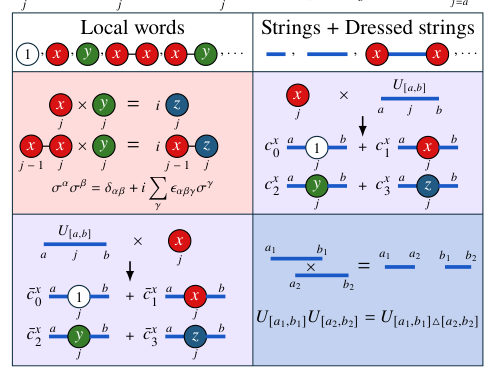
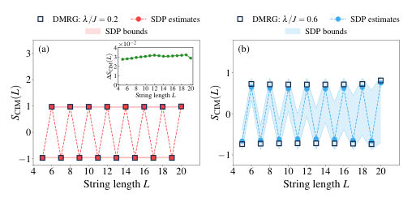
Summary. This paper introduces a novel 'string bootstrap' method to rigorously certify nonlocal string order parameters in quantum spin chains. By treating long-range string correlators as primary variables in a Semidefinite Program, the authors overcome the exponential cost barrier associated with traditional methods. This allows for the direct, wavefunction-free certification of topological order in complex quantum many-body systems.
Why it may be interesting. This work provides a powerful, rigorous, and computationally tractable framework for diagnosing topological order in quantum magnets, extending beyond the limitations of variational or purely local methods.
Main problem. The paper addresses the challenge of rigorously certifying nonlocal string order parameters in quantum many-body systems, which are crucial diagnostics for topological phases.
Main result. The authors developed a bootstrap method that treats string operators as primary objects, allowing the certification of nonlocal string order parameters for models like the cluster Ising and spin-1 Heisenberg chains with polynomial computational cost.
Method. They formulate the problem as a Semidefinite Program (SDP) by exploiting the algebraic closure of string operators, which reduces the exponential cost barrier of traditional bootstrap methods.
Model / system. The work applies to quantum spin chains, specifically benchmarking against the Transverse-Field Ising Model (TFIM), the Cluster Ising Model (CIM), and the spin-1 Heisenberg chain.
Key observables. Nonlocal string order parameters, including Z-strings ($\langle \prod \sigma^z angle$) and the string order parameter for CIM ($ ext{SCIM}(L)$).
Important parameters / regimes. String length ($\ell$), external field strength ($h/J$), and coupling ratios ($\lambda/J$).
Assumptions / limitations. The tractability relies on the algebraic closure of strings and local words under canonical reduction rules, allowing the problem to be framed as a polynomial-cost SDP.
Figures summary. Figures illustrate the moment matrix construction, the comparison of certified bounds (e.g., $Z$-strings, $ ext{SCIM}(L)$) across different phases, and the impact of increasing the local basis size ($d$) or refining the endpoint operators.
Paper structure. The paper introduces the limitations of standard bootstrap methods, proposes the novel string-based SDP formulation, details the algebraic closure rules, and then benchmarks the method by applying it to specific Hamiltonians (TFIM, CIM, Spin-1) to certify string order.
The many-body bootstrap certifies ground-state properties by minimizing energy over correlators constrained only by positivity, without any variational wavefunction. Its cost, however, grows exponentially with the size of the operators involved, placing the long-range string correlators that diagnose topological phases out of reach. We overcome this by treating string operators as primary objects: bare and endpoint-dressed strings satisfy a closed operator algebra with one another and with local words, yielding a semidefinite program whose cost grows only polynomially with string length. A single computation then yields estimates of string correlators of all lengths. Rigorous two-sided bounds are obtained for each target string once the ground-state energy is pinned within a window. When benchmarked against density-matrix renormalization group computations on the cluster Ising and spin$-1$ Heisenberg chains, the method certifies the nonlocal string order of the cluster and Haldane phases directly from the Hamiltonian. Our rigorous certification of string order parameters reveal that the sharpness of the bounds is set by which operators enter the calculation, not by their length alone. By exploiting algebraic closure of strings and local words, our framework lifts spatially extended observables into polynomially tractable bootstrap variables, opening up a route to wavefunction-free certification of nonlocal order in quantum many-body systems.
Authors: Qian-Rui Lee, Daw-Wei Wang
Type: theory · Category: statistical mechanics · PDF: https://arxiv.org/pdf/2609.24905v1
Analysis basis: full PDF text, analyzed in chunks
Topic relevance: analog quantum simulation 2/5
Summary. This work introduces Channel Concentration (CC) as a metric to dissect how the total ground-state response at quantum critical points is distributed across different excitation modes. By applying this measure to models like the TFIM and CFTs, the authors demonstrate that CC reveals structural differences in quantum response that are invisible when only considering the total metric scaling. This provides a powerful diagnostic tool for characterizing quantum criticality.
Why it may be interesting. It provides a rigorous, quantitative tool (CC) to probe the internal structure of quantum correlations at criticality, which is crucial for understanding how different degrees of freedom contribute to bulk properties.
Main problem. The paper addresses how the total ground-state response, quantified by the quantum metric, is distributed among specific, predefined excitation channels, moving beyond aggregate scaling information.
Main result. Channel Concentration (CC) provides a diagnostic that resolves structural details missed by total metric scaling, yielding distinct values for different critical models (e.g., 2/3 for TFIM vs. 1/3 for XX).
Method. The authors define Channel Concentration (CC) as the sum of squared normalized response weights over specified excitation channels, using techniques derived from fidelity susceptibility and CFT analysis.
Model / system. The study analyzes quantum systems at criticality, specifically using the transverse-field Ising model (TFIM), the half-filled XX chain, and a unitary 1+1-dimensional Conformal Field Theory (CFT) on a circle.
Key observables. Channel Concentration (CC), normalized response weights ($\pi_c$), and the total response $P_2$ (related to fidelity susceptibility).
Important parameters / regimes. Critical exponents, finite-size scaling parameters ($L$), and the scaling dimension $\Delta$ in CFT.
Assumptions / limitations. The analysis relies on defining specific excitation projectors ($\Pi_c$) to resolve the response, and some numerical checks are explicitly noted as 'small-size operator-selectivity diagnostics' rather than thermodynamic limits.
Figures summary. The notes reference multiple tables detailing fit diagnostics for various models (Potts, NNN-TFIM) and numerical bounds for projector concentrations, confirming consistency checks.
Paper structure. The paper develops the CC formalism, applies it to known critical models (TFIM, XX), derives universal functions for CFTs, and concludes with extensive numerical diagnostics comparing finite-size scaling and operator dependence.
The quantum metric quantifies the total ground-state response along a parameter direction, but does not resolve how excitations share that response. We define channel concentration (CC) as the sum of squared normalized response weights over specified excitation channels, such as momentum blocks. An exact finite-size theorem yields thermodynamic CCs of 2/3 for the field response of the critical transverse-field Ising model and 1/3 for the half-filled XX pairing response, despite the same leading metric scaling. In finite-size approaches to the XY Lifshitz point, field and anisotropy perturbations yield different concentrations despite a common limiting Hamiltonian with quadratic dispersion. In a unitary 1+1-dimensional conformal field theory (CFT) on a circle, we consider a nondegenerate vacuum in a fixed sector perturbed by one spatially integrated scalar primary. We derive complete zero-momentum energy-level response weights, including descendants. For scaling dimension $0<Δ<3/2$, these weights determine the normalized response distribution and an exact universal concentration function. The expression reproduces the exact Ising lattice limit 2/3 and gives approximately 0.8515 for the three-state Potts thermal field, compared with approximately 0.800 from an exponent-only approximation. Finite-size interacting calculations compare concentrations and ranked response weights over many-body energy levels. These exact benchmarks show which response distinctions total metric scaling misses and guide comparisons with finite-size interacting spectra.
Authors: Leena Anthony, Artemiy Burov, Nicolas Piro, Matteo Dal Peraro, Clément Javerzac
Type: both · Category: quantum information and computing · PDF: https://arxiv.org/pdf/2609.24666v1
Analysis basis: full PDF text, analyzed in chunks
Topic relevance: QC/QI experiment 2/5
Summary. This paper investigates the practical feasibility of using Quantum Convolutional Neural Networks (QCNNs) for machine learning when data is limited. The authors demonstrate that QCNNs can achieve strong performance with very few training samples by leveraging parameter efficiency. However, they conclude that scaling these models to complex, high-resolution images is currently constrained by the physical process of encoding the data onto qubits, rather than by the theoretical optimization capabilities of the quantum circuit.
Why it may be interesting. It provides a concrete, applied study on the practical limitations of mapping classical data structures (images) onto quantum hardware, highlighting the critical role of data encoding schemes (amplitude vs. angle) in determining feasibility.
Main problem. The core challenge addressed is achieving reliable machine learning performance using quantum models when training data is scarce (the small-data regime), which is critical for fields like medical diagnostics.
Main result. While QCNNs show promise for few-shot learning with significantly fewer parameters than classical baselines, the primary bottleneck for scaling to realistic image data is identified as the data encoding and hardware execution, not the optimization process itself.
Method. The authors developed and tested hardware-compatible Quantum Convolutional Neural Networks (QCNNs) by comparing their generalization error bounds against classical CNNs on image classification tasks.
Model / system. The model is a QCNN architecture utilizing quantum circuits, tested with two encoding schemes: amplitude encoding and angle encoding. The system is simulated across varying image resolutions (2x2 to 512x512) and compared against classical convolutional networks.
Key observables. Generalization error, number of trainable parameters, class separation in t-SNE embeddings, and circuit depth/qubit count.
Important parameters / regimes. Small sample sizes (e.g., 10 training samples), the number of trainable parameters (e.g., 45 parameters), and image resolution (P).
Assumptions / limitations. The analysis relies on generalization bounds from Caro et al. (2022) and assumes the feasibility of hardware-compatible circuits with mid-circuit measurement.
Figures summary. Figures illustrate learning regimes showing QCNNs succeeding where classical models fail with few samples, and compare the scaling trade-offs between amplitude and angle encoding across resolutions.
Paper structure. The paper establishes the need for few-shot learning in quantum ML, details the QCNN methodology and its comparison to classical models, presents results on digit and medical image datasets, and concludes by identifying the encoding bottleneck as the limiting factor for scaling.
Quantum machine learning is a promising paradigm for learning from limited data, a central bottleneck in domains such as medical imaging, clinical trials, and rare diseases. Quantum convolutional neural networks (QCNNs) are particularly attractive in this setting, combining a hierarchical architecture with strong inductive bias and a parameter count that grows only logarithmically with system size. Their appeal rests on the generalization bounds of Caro et al. (2022), which show that the generalization error of a quantum model scales with the number of trainable parameters rather than with the Hilbert-space dimension, placing QCNNs in a potentially sample-efficient regime. We develop a hardware-compatible QCNN with mid-circuit measurement and classical feed-forward, and show on a binary handwritten-digit task that strong test performance is achievable from as few as 10 training samples, with the generalization error decreasing as the training set grows. At a matched 45-parameter budget the QCNN learns where an equally small classical convolutional network stays at chance, although an unconstrained classical baseline with roughly 25,000 parameters remains strongest when data are plentiful. Transpiling amplitude and angle encoded circuits across image resolutions from 2x2 to 512x512 pixels then exposes the dominant scaling bottleneck: amplitude encoding stays qubit-efficient but grows extremely deep, whereas angle encoding stays shallow but becomes qubit-prohibitive. On the medically motivated BreastMNIST benchmark the QCNN does not surpass the unconstrained classical network, yet it learns consistently above chance using orders of magnitude fewer parameters. Our results indicate that for QCNNs, learning from few samples is attainable in practice, whereas scaling to realistic image data is constrained less by optimization than by data encoding and hardware execution.
Authors: Kean Chen, Aadil Oufkir
Type: theory · Category: quantum information and computing · PDF: https://arxiv.org/pdf/2609.23752v1
Analysis basis: full PDF text, analyzed in chunks
Topic relevance: quantum measurements 2/5
Summary. This paper provides a rigorous analysis of the query complexity needed for incoherent quantum channel tomography for low-rank channels. By establishing near-optimal upper and lower bounds, it quantifies the minimum experimental resources required to characterize quantum processes with high fidelity. The methodology combines advanced information theory with adaptive experimental design techniques.
Why it may be interesting. This work provides fundamental resource estimates for quantum process tomography, which is crucial for characterizing and benchmarking quantum hardware devices. The explicit comparison between adaptive and nonadaptive protocols, and the inclusion of the low-rank structure, is highly relevant for understanding practical quantum characterization.
Main problem. The paper tackles the problem of determining the minimum number of quantum channel uses (query complexity) required to reconstruct an unknown quantum channel to a specified error tolerance.
Main result. They establish near-optimal query complexity bounds, showing that for low-rank channels, the required number of queries scales as $\Theta(d_1d_2r^2/\epsilon^2)$ in the gapped case, and $O(d_1d_2r^2 \log(2d_1)/\epsilon^2)$ in the general case.
Method. The authors employ information-theoretic techniques, utilizing Fisher information bounds and Fano's inequality for lower bounds, and developing adaptive estimation algorithms (like Matrix Multiplicative Weight Update) for upper bounds.
Model / system. The study focuses on quantum channels $E: \mathcal{L}(\mathbb{C}^{d_1}) o \mathcal{L}(\mathbb{C}^{d_2})$ characterized by their Kraus rank $r$. The learning process is restricted to an incoherent setting, meaning no quantum memory is retained between channel uses.
Key observables. Query complexity (number of channel uses), Diamond norm error ($\epsilon$), and the channel's Kraus rank ($r$).
Important parameters / regimes. Input dimension ($d_1$), output dimension ($d_2$), Kraus rank ($r$), and the error tolerance ($\epsilon$).
Assumptions / limitations. The analysis distinguishes between a 'gapped' regime (where non-zero Choi eigenvalues are bounded below) and the general case. The lower bounds rely on constructing specific hard families of channels.
Figures summary. Not specified in the notes, but the paper structure implies comparisons between different complexity bounds (Table 1).
Paper structure. The paper is structured around establishing both upper and lower bounds for the query complexity. It first analyzes the simplified 'gapped' case using nonadaptive algorithms, then generalizes to the 'general' case using adaptive input state updates. The theoretical underpinning involves deriving mutual information bounds using LSI and Fano's inequality.
We study tomography for quantum channels with input dimension $d_1$, output dimension $d_2$, and Kraus rank at most $r$, to within diamond norm error $\varepsilon$, using adaptive experiments that retain no quantum memory between channel queries. - For quantum channels whose non-zero Choi eigenvalues are bounded below by $Ω(d_1/r)$, we establish optimal query upper and lower bounds $Θ(d_1d_2r^2/ε^2)$. The upper bound is achieved by a nonadaptive algorithm that uses the estimator from [Surawy-Stepney et al., Quantum (2022)], together with a new diamond-norm analysis. The lower bound applies to arbitrary adaptive incoherent protocols and follows from a new local family of channels and a uniform one-query Fisher-information bound. - For general channels, we establish an upper bound $O(d_1d_2r^2\log(2d_1)/ε^2)$, nearly matching the above lower bound $Ω(d_1d_2r^2/\varepsilon^2)$. To achieve this, we generalize the above nonadaptive algorithm by adapting the input state over $O(\log(2d_1))$ rounds with the Matrix Multiplicative Weight Update algorithm.
Authors: Ryutaroh Matsumoto
Type: theory · Category: quantum information and computing · PDF: https://arxiv.org/pdf/2609.23316v1
Analysis basis: full PDF text, analyzed in chunks
Topic relevance: quantum measurements 2/5
Summary. This paper presents a novel linear algebraic method to optimize quantum error correction by simultaneously minimizing the necessary observables and the measured qudits for correcting erasures. It provides rigorous procedures and bounds for general entanglement-assisted quantum codes. This work advances the theoretical understanding of resource reduction in quantum information processing.
Why it may be interesting. While focused on abstract coding theory, the concepts of local recovery and minimizing measurement overhead are crucial for designing practical quantum communication protocols and fault-tolerant quantum computation.
Main problem. The paper develops a linear algebraic procedure to simultaneously reduce the set of observables and the measured qudits required for quantum error correction when correcting erasures in entanglement-assisted quantum local recovery.
Main result. The proposed procedure computes a reduced set of observables of minimum possible size and a reduced repair group, providing closed-form upper bounds for specific code constructions.
Method. The core method is a linear algebraic procedure involving subspace decomposition, rank calculations, and greedy column reduction to minimize the required measurement resources.
Model / system. The study focuses on quantum error-correcting codes (QECCs), particularly entanglement-assisted codes defined over $\mathbb{F}_q^{2n}$, addressing the challenge of quantum erasure correction.
Key observables. The size of the reduced observable set ($|O|$) and the size of the reduced repair group ($|J|$).
Important parameters / regimes. Code length ($n$), field size ($q$), the size of the initial repair group ($|K|$), and the size of the erasure set ($|I|$).
Assumptions / limitations. The procedure is specialized for general EAQECCs, though initial derivations rely on assumptions about the structure of the code and its dual.
Paper structure. The paper introduces the general problem, details the linear algebraic procedure for reduction, specializes this procedure to Euclidean and Hermitian orthogonality cases, and concludes by deriving and analyzing the resulting upper bounds.
For a general entanglement-assisted or unassisted quantum error-correcting code, a set of erasures, and an associated repair group, we propose a linear algebraic procedure to compute a reduced set of observables and a reduced repair group of codeword qudits for correcting the given erasures. The procedure has cubic complexity in the repair group size and the computed set of observables has the smallest possible size for correcting the given erasures. We specialize the general procedure to quantum codes constructed from Euclidean and Hermitian orthogonality, and provide closed-form upper bounds on the size of reduced repair groups for those special cases. Based on these closed-form bounds, we propose quantum counterparts of the information locality of classical local recovery.
Authors: Xue-Feng Pan, Xin-Lei Hei, Franco Nori, Peng-Bo Li
Type: theory · Category: quantum information and computing · PDF: https://arxiv.org/pdf/2609.24759v1
Analysis basis: full PDF text, analyzed in chunks
Topic relevance: QC/QI experiment 2/5
Summary. This paper proposes using superconducting junctions incorporating altermagnets to create next-generation qubits. By engineering the Josephson potential to include higher harmonics via double-Cooper-pair tunneling, the resulting qubit achieves large anharmonicity and intrinsic protection against charge noise. This establishes altermagnets as a programmable platform for high-coherence quantum computing components.
Why it may be interesting. This work is highly relevant as it proposes a solid-state, material-based route to overcome fundamental limitations in superconducting qubit coherence, directly impacting the feasibility of quantum computation hardware.
Main problem. The paper addresses the challenge of engineering superconducting qubits with superior coherence and anharmonicity by designing novel Josephson potentials.
Main result. Altermagnets provide a versatile platform to engineer non-sinusoidal Josephson potentials, leading to transmon-like qubits that exhibit intrinsic protection against charge noise in the 2φ-junction regime.
Method. The authors employ theoretical modeling, including calculating Josephson currents via the Furusaki-Tsukada formula and using inverse-design workflows to map target Current-Phase Relations (CPRs) to microscopic material parameters.
Model / system. The system is a superconducting qubit implemented using superconducting-altermagnet-superconductor junctions (AMJJs). The physics is governed by the Josephson energy, which can be engineered to contain both single- and double-Cooper-pair tunneling terms, leading to a potential $V(\phi) = -I_1 \cos(\phi) - I_2/2 \cos(2\phi)$.
Key observables. Qubit anharmonicity ($\alpha_f$), charge noise decay rates ($\Gamma_{Q}^{DC}, \Gamma_{Q}^{DP}$), and flux noise sensitivity ($\Gamma_{ ext{Flux}}^{DP}$).
Important parameters / regimes. The ratio $\eta = I_2/I_1$ dictates the junction regime ($\phi$, $0$, or $2\phi$), and external magnetic flux ($\Phi_{ ext{ext}}$) is used for fine-tuning.
Assumptions / limitations. The analysis relies on treating the system as a transmon-like qubit shunted by a capacitor, and the noise suppression mechanisms are derived from parity selection rules applied to the Cooper-pair number operator.
Figures summary. Figures illustrate the schematic of the AMJJ and qubit circuit, the engineered Josephson potentials for different junction regimes, and the dependence of qubit properties (anharmonicity, noise coupling) on the junction parameters $\eta$ and external flux.
Paper structure. The paper progresses from establishing the physical platform (AMJJs) and the resulting programmable Josephson potential, to analyzing the resulting qubit Hamiltonian, and finally detailing the noise suppression mechanisms achieved through specific junction regimes (especially the $2\phi$-junction).
Altermagnets, characterized by vanishing net magnetization and momentum-dependent spin splitting, provide a promising platform for next-generation Josephson devices. Here, we exploit the Josephson effect in superconductor-altermagnet-superconductor junctions and show how to engineer prescribed current-phase relations by device design. Based on these programmable Josephson potentials utilizing altermagnetism, we propose a new class of transmon-like superconducting qubits that combine large anharmonicity with enhanced robustness against decoherence via coherent two-Cooper-pair tunneling. We show that in the $2φ$-junction regime, this kind of qubit provides intrinsic protection against charge noise due to parity protection. Magnetic flux can be used to precisely control the qubit and, under appropriate bias, this architecture further suppresses charge and flux noise. Our results establish altermagnets as a versatile platform for Josephson-potential engineering and open a new route toward high-performance superconducting qubits combining high coherence, large anharmonicity, and broad tunability.
Authors: Sahil Gopalkrishna Naik
Type: theory · Category: other · PDF: https://arxiv.org/pdf/2609.22998v1
Analysis basis: full PDF text, analyzed in chunks
Topic relevance: quantum measurements 2/5
Summary. This paper introduces a Generalized Causality Principle (GCP) to constrain correlations in quantum and post-quantum theories based on a single-interaction constraint. Using process matrices, the authors show that this principle imposes non-trivial restrictions on achievable correlations, analogous to how no-signalling constrains quantum correlations. This provides a powerful, general framework for testing fundamental causal assumptions.
Why it may be interesting. The framework of process matrices and causality constraints is highly relevant to understanding fundamental limits in quantum information, particularly when considering device-independent security or generalized causal structures beyond standard quantum mechanics.
Main problem. The paper aims to establish a fundamental, theory-independent restriction on correlations generated by processes constrained by a single interaction, analogous to the no-signalling principle in Bell tests.
Main result. The authors propose a 'generalised causality principle' (GCP) which defines a strict subset of all signalling correlations for certain cases, providing a fundamental limit on quantum and post-quantum theories.
Method. The work utilizes General Probabilistic Theories (GPTs) formulated via process-matrix formalism, deriving constraints by analyzing the structure of bipartite process matrices under single-interaction constraints.
Model / system. The model involves bipartite processes described by four-partite Hermitian matrices ($W_{AI A O B I B O}$), representing correlations between two parties (Alice and Bob) interacting with an environment.
Key observables. Correlation probabilities $p(ab|xy)$, the Generalised Causality Polytope, and the process matrix $W$.
Important parameters / regimes. The number of outcomes for the parties (e.g., $2 imes 2$ vs $3 imes 3$ outcomes).
Assumptions / limitations. The analysis relies on the 'no restriction hypothesis' for GPTs and the definition of the single-interaction constraint.
Figures summary. Not specified.
Paper structure. The paper builds from defining the process matrix formalism and the single-interaction constraint, introduces the GCP, and then proves theorems showing that GCP imposes non-trivial restrictions on correlations, especially for larger outcome sets.
The no-signalling principle lies at the heart of Bell-type experiments involving spacelike-separated parties. Although not all no-signalling correlations can be realized within quantum theory, the no-sinalling principle itself remains fundamental even for post-quantum theories, since its violation would imply superluminal signalling. In the spirit of device independent nature of the Bell inequalities, there has recently been growing interest in causal inequalities, which identify correlations admitting no causal explanation. Such correlations have been rigorously studied within the process-matrix formalism, which is built upon a constraint analogous to spacelike separation in Bell scenarios. We refer to this constraint as the single-interaction constraint, whereby each party interacts with the environment only once. Despite considerable effort, no fundamental guiding principle is currently known that characterizes the restrictions this constraint imposes on the correlations generated by Process Matrices. In this work, we address this gap by proposing a generalized causality principle for the bipartite case. We show that for certain cases, the generalised causality principle defines a strict subset of the set of all signalling correlations. This principle thus provides a fundamental limit on quantum and even post-quantum theories subject to the single-interaction constraint. By analogy with no-signalling, whose violation excludes certain causal structures among the parties, a violation of the generalised causality principle rules out a corresponding class of causal structures(causal structures with the single interaction constraint). More broadly, our techniques provide a general framework for deriving generalised causal constraints, applicable to a wide class of indefinite-causal-order scenarios.
← Index · ← Previous · Next →